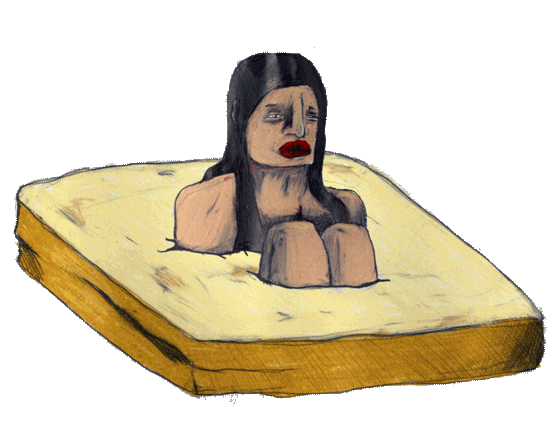
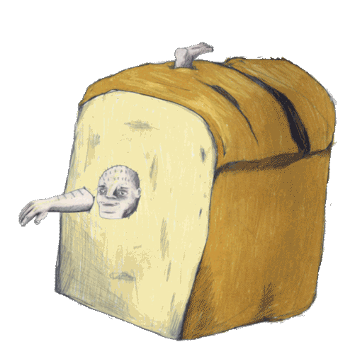
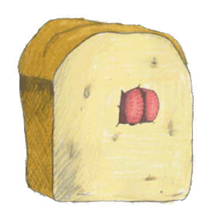
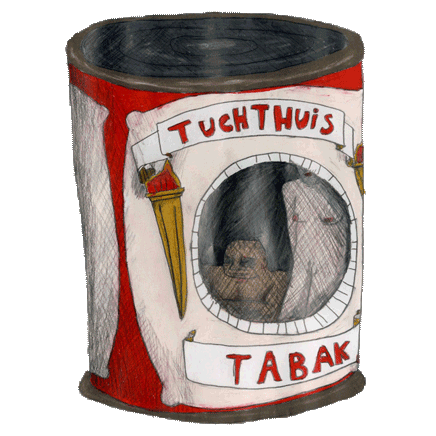
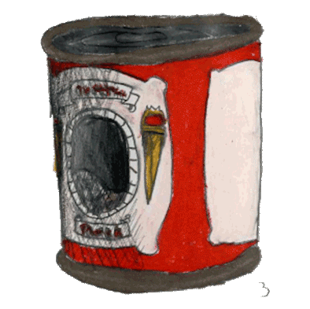
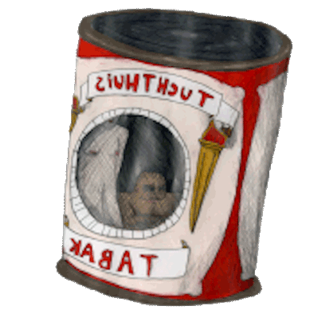
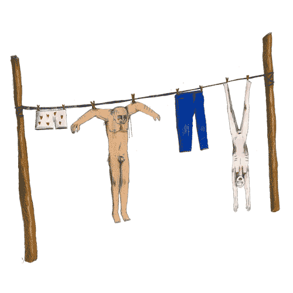
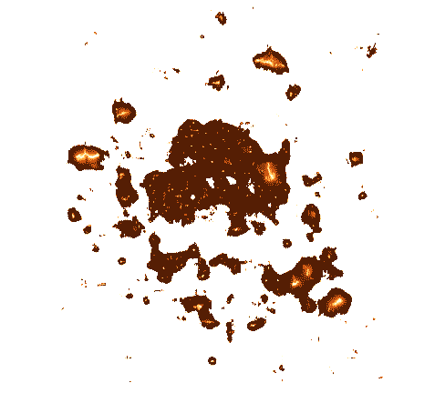
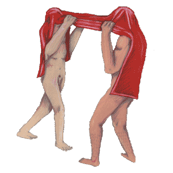

Loading, please wait...
Scan de marker met de camera
Beweeg rond de objecten voor de beste ervaring
De luisterverhalen kan je doorlopend afspelen
        
x
Your browser does not support the audio element.